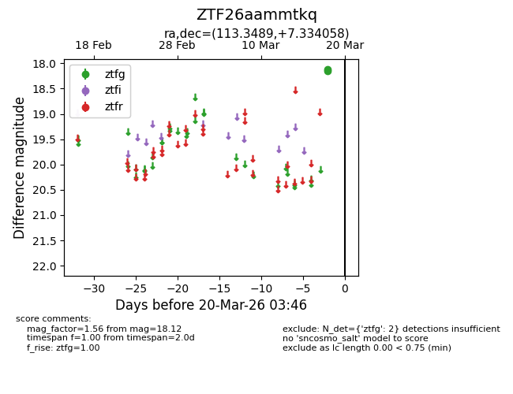
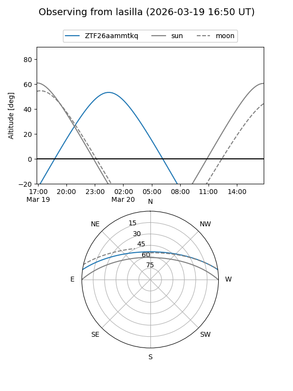
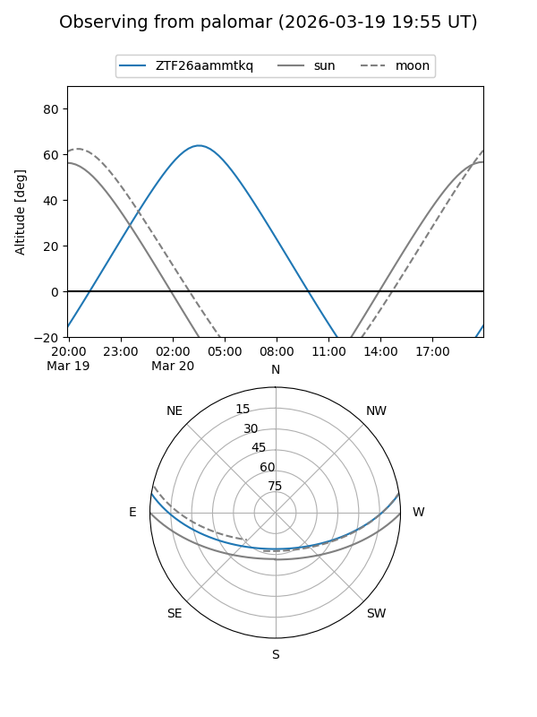

ZTF26aammtkq
Target ZTF26aammtkq at 2026-03-20 03:48
Aliases and brokers:
FINK: link
Lasair: link
ALeRCE: link
alt names
ZTF26aammtkq (ztf,fink_ztf)
Coordinates:
equatorial (ra, dec) = 113.3489,+7.33406
equatorial (HMS+DMS) = 07:33:23.74,+07:20:02.61
galactic (l, b) = (211.0951,+12.64494)
Flags:
Photometry:
last ztfg=18.12
2 ztfg detections
Lightcurve

Visibility


Additional plots